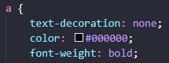

Insira a tag de link conforme abaixo nomeando com o seu arquivo .css para poder realizar a importação dos estilos.

Recursos de estilização que podem ser utilizados para personalizar cada elemento do documento HTML. Usualmente define-se uma classe * class * para um elemnto, e realiza o chamamento dessa classe no arquivo .css para personalização. Pode-se utilizar também o atributo * id * no HTML e chamar no css pela mesma id.
Neste porjeto foi criada uma classe chamada overflow para aplicar o comando de -webkit-scrollbar display none, que funciona ocultando a barra de rolagem de uma seção, sem tirar a propriedade da rolagem. Sempre que necessário utilizar essa propriedade, basta incluir essa classe no elemento HTML.
Um elemento padronizado pode ser usado repetidamente no mesmo projeto, e toda edição via css que for realizada naquela classe, será refletido em todos os elemntos que a usam. Caso seja necessário realiza alguma edição pontual em um dos elementos padronizados, pode-se acrescentar outra classe no elemnto HTML para que seja individualizado na ação do css.
Caso seja necessário realizar uma padronização geral no projeto, basta definir o estilo e chamar pelo nome padrão da ou das classes ou até mesmo do próprio elemento. Exemplo, caso você queira alterar o text-decoration dos links de todo um projeto, basta você chamar pela tag a no documento css, dessa forma todo link a href tomará como estilo o que foi definido no css.
Você pode ser bastante específico para chamar uma classe, descrevendo toda a hierarquia sempre respeitando pai > filho.

Você pode chamar várias classes de uma vez para aplicar o mesmo estilo, separando por vírgulas.

Uma dica é usar o inspecionar do navegador para conseguir identificar as classes pai e filho para aplicar corretamente a estilização. Evite usar o * "important" *.
Utilize * {} para aplicar uma estilização geral no documento.
Algumas propriedades podem ser utilizadas de forma agrupada, desde que correspondam a mais de uma orientação. Por exemplo, padding, margin e border, que correspondem sempre a 4 direções distintas, top, right, bottom e left. Neste caso, pode-se agrupar conforme imagem abaixo.
Para realizar a importação de uma fonte Google, busque pela fonte desejada, clique em get font, get embed code, @import, copie e cole o código na primeira linha do aqrquivo css, sem a tag * script *. Copie e cole logo abaixo os estilos da fonte que deseja usar no projeto. Todas as páginas irão utilizar a fonte padrão que será importada.